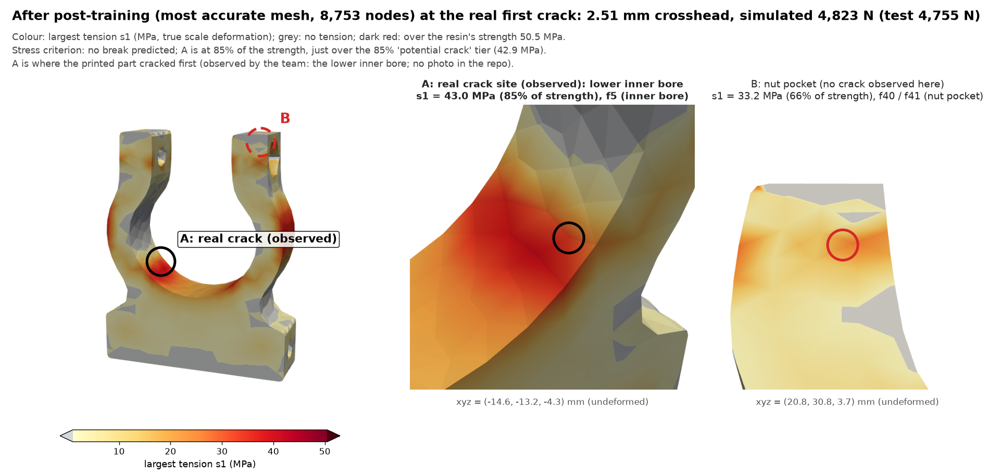

Part abc_00000065 crushed in an Instron. Real first crack: the first load drop, at the peak, 4,755 N at 2.51 mm crosshead, at the lower inner bore (observed by the team on the broken part). The simulation has no fracture model, so this is a crack-onset criterion checked on each CalculiX increment: the largest tension s1 reaching the resin's strength (50.5 MPa: predicted crack) or 85% of it (42.9 MPa: potential crack), or the plastic strain PEEQ reaching the dogbone's strain at break (0.043).
Red ring and X: where and when the largest tension reaches the resin's strength (predicted crack). Amber ring: where it first reaches 85 % of it (potential crack). Black ring: where the real part cracked first (observed: lower inner bore). Black diamond on the graphs: the real first crack (test peak). Part colour: plastic strain PEEQ, as in the original video. Potential crack: tension at 85% of the resin's dogbone strength (42.9 MPa; a margin for print defects and layer lines; the threshold was chosen after seeing this test). The real crack site (lower inner bore, face f5) is the team's observation of the broken part; there is no photo in the repo, and which side and the exact point were not recorded: the black ring is drawn at the simulation's most stressed bore point, so the match is a region match, not a point match.
The most accurate mesh: it follows the test to 2 % and stays below the full strength everywhere; it reaches the potential-crack tier at the lower inner bore just as the real part cracks there. Potential crack: tension at 85% of the resin's dogbone strength (42.9 MPa; a margin for print defects and layer lines; the threshold was chosen after seeing this test).

Largest tension s1 at 2.51 mm. A: the most stressed point, 43.0 MPa on f5 (inner bore): where the printed part cracked first (observed). B: the most stressed point near the nut-pocket corners, 33.2 MPa (no crack observed there). For comparison with a photo of the broken part. PDF: after_crack_closeup.pdf. The real crack site (lower inner bore, face f5) is the team's observation of the broken part; there is no photo in the repo, and which side and the exact point were not recorded: the black ring is drawn at the simulation's most stressed bore point, so the match is a region match, not a point match.
| case | PEEQ ≥ 0.043, raw | PEEQ, robust | predicted crack: s1 ≥ 50.5 MPa, raw | s1 ≥ 100 %, robust | potential crack: s1 ≥ 42.9 MPa (85 %), raw | s1 ≥ 85 %, robust | site matches the real crack (observed: lower inner bore)? |
|---|---|---|---|---|---|---|---|
| before what we started with, 2,937 nodes, 33 % off | 0.98 mm, 2,535 N nut pocket: f41 / f42 | 1.05 mm, 2,633 N nut pocket: f42 | 1.76 mm, 3,162 N prong inner side: f13 / f16 | 1.86 mm, 3,193 N prong inner side: f14 | 1.50 mm, 3,045 N prong inner side: f13 / f16 | 1.63 mm, 3,108 N prong inner side: f14 | 85 %: no (prong inner side); 100 %: no (prong inner side) |
| stage2 learned test conditions, default mesh, 2,937 nodes, 7.8 % off | 1.57 mm, 3,689 N nut pocket: f41 / f42 | 1.81 mm, 4,145 N nut pocket: f42 | none by 2.79 mm at the real crack: 42 MPa, outer side: f6 / f12 | none by 2.79 mm at the real crack: 31.3 MPa, prong hole: f36 / f55 | 2.56 mm, 5,226 N outer side: f6 / f12 | none by 2.79 mm at the real crack: 31.3 MPa, prong hole: f36 / f55 | 85 %: no (outer side); 100 %: no (outer side, most stressed) |
| stage3 learned conditions, pre-trained mesh, 6,430 nodes, 4.6 % off | 1.22 mm, 2,837 N nut-pocket corner: f8 / f12 / f38 / f39 | 1.37 mm, 3,181 N nut-pocket corner: f8 / f12 / f38 / f39 | 2.58 mm, 5,045 N nut-pocket corner: f8 / f13 / f41 / f42 | none by 2.79 mm at the real crack: 41.3 MPa, lower inner bore: f5 | 2.18 mm, 4,570 N nut-pocket corner: f8 / f13 / f41 / f42 | 2.62 mm, 5,085 N lower inner bore: f5 | 85 %: no (nut-pocket corner); 100 %: no (nut-pocket corner) |
| after trained on the real test: most accurate mesh, 8,753 nodes, 2.0 % off | 1.16 mm, 2,659 N nut pocket: f12 / f38 / f39 | 1.31 mm, 2,969 N nut pocket: f13 / f41 / f42 | none by 2.78 mm at the real crack: 43 MPa, lower inner bore: f5 | none by 2.78 mm at the real crack: 40.8 MPa, lower inner bore: f5 | 2.51 mm, 4,814 N lower inner bore: f5 | 2.65 mm, 4,950 N lower inner bore: f5 | 85 %: yes (lower inner bore); 100 %: yes (lower inner bore, most stressed) |
| real test | first load drop at the peak: 4,755 N at 2.51 mm (machine report: 4.80 kN at 2.56 mm) | lower inner bore, f5 (observed) | |||||
Travel uses each case's own crosshead mapping (before: crosshead = part shortening). Raw: the single highest node; robust: reached by at least 3 nodes within 3 mm (about twice the node spacing, so a single spiky node does not count). Red: a break is predicted; amber: a potential crack. A site matches when it lies on the bore (f5) below its centre. Potential crack: tension at 85% of the resin's dogbone strength (42.9 MPa; a margin for print defects and layer lines; the threshold was chosen after seeing this test). Also as PNG, PDF, Markdown; data in break.json.
| mesh (learned conditions) | nodes | force error | PEEQ ≥ 0.043, raw | PEEQ, robust | predicted crack: s1 ≥ 50.5 MPa, raw | s1 ≥ 100 %, robust | potential crack (85 %), raw |
|---|---|---|---|---|---|---|---|
| automesher (gmsh defaults) | 2,937 | 7.8 % | 1.57 mm [0.134] | 1.81 mm [0.097] | none [42] | none [31.3] | 2.56 mm (outer side) |
| pre-trained swarm mesh | 6,430 | 4.6 % | 1.22 mm [0.226] | 1.37 mm [0.18] | 2.58 mm [49.4] | none [41.3] | 2.18 mm (nut-pocket corner) |
| uniform 4 mm | 9,506 | 2.0 % | 1.11 mm [0.306] | 1.48 mm [0.165] | none [42.4] | none [40.9] | 2.54 mm (lower inner bore) |
| uniform 2.5 mm | 24,194 | 1.2 % | 1.24 mm [0.226] | 1.39 mm [0.18] | none [41.9] | none [40.5] | 2.58 mm (lower inner bore) |
| uniform 2 mm | 41,186 | 1.1 % | 1.11 mm [0.271] | 1.25 mm [0.241] | 2.71 mm [45.8] | none [40.2] | 2.38 mm (nut-pocket corner) |
Onset travel by each criterion; in brackets the value at the real crack travel (PEEQ, or s1 in MPa). At the real crack every mesh puts the largest tension at 42-49 MPa (83-98 % of the strength); only the pre-trained swarm mesh (2.58 mm) and the uniform 2 mm mesh (2.71 mm) cross it, just after the real crack. Where the 85 % tier is first reached moves with the mesh: the lower inner bore on the post-trained, 4 mm and 2.5 mm meshes, a nut-pocket corner on the swarm and 2 mm meshes, the outer side on the coarse default mesh.